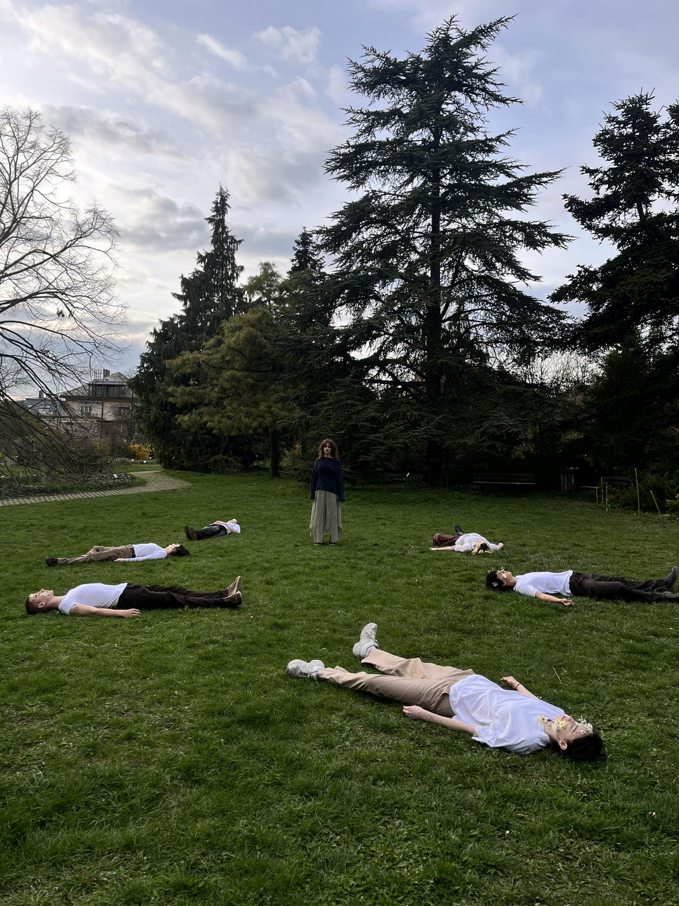

Projektek
Szalagavató
2023 novemberében volt a gimnáziumi szalagavatónk, ahol az osztálytáncunk tematikája sámántánc volt. Én terveztem az alapot mindenki sámánruhájához, majd ezt mindenki úgy díszítette magának, ahogy szerette volna.
Rajz OKTV

A 2023/2024-es vizuális kultúra OKTV-re a barátaimról készítettem lefolyt sminkben portrékat.
Filmforgat�s

2024 márciusában pedig az egyik barátom a média érettségijére filmet forgatott, ebben mi segédkeztünk, én terveztem a virágos sminket és magának a kisfilmnek a látványát.